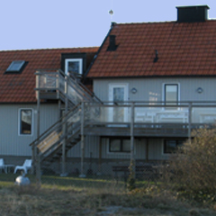
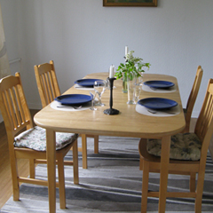

Rådhuskällaren, som namnet antyder, finns i källaren av det vackra rådhuset i Malmö och är en av Malmös mest anrika restauranger. Här bjuds, förutom ljuvlig mat och fulländad service, även på en fröjd för det estetiska sinnet.
Vårt lunchutbud tillhör Malmös mest populära, och ur vår à la carte-meny kan våra gäster avnjuta såväl klassiska maträtter som mer modernt inspirerade anrättningar. Som höjdpunkter på året kan nämnas gåsamiddagar och Rådhuskällarens klassiska julbord.